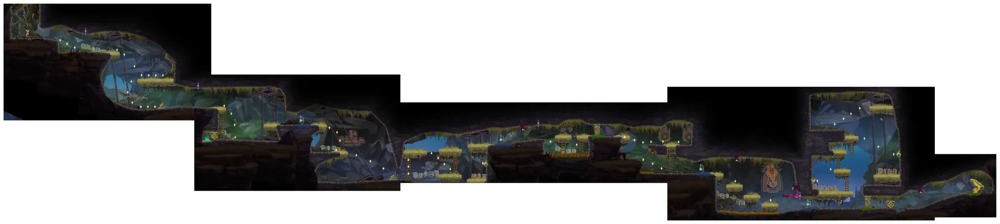
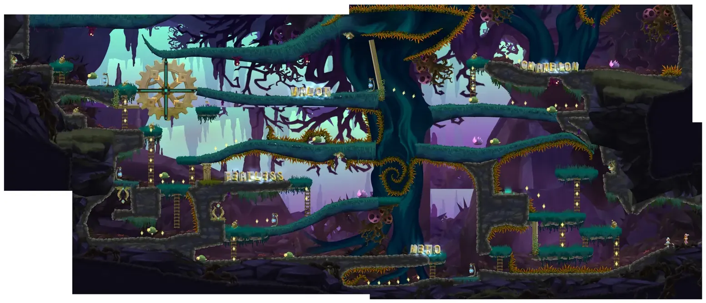
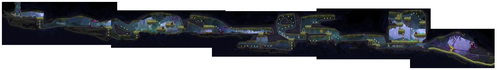
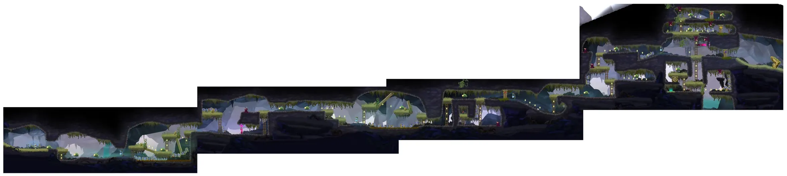
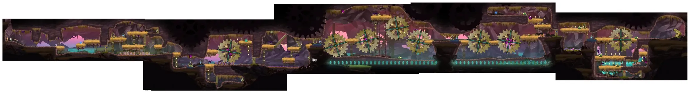

Project Overview
Maple & The Forest of Words is a casual, narrative-driven mobile platformer with light puzzles and simple enemy interactions. I worked as a Level & Puzzle Designer for roughly six months on a team of 5–10 people.
My responsibilities included:
- Designing about 10 levels from blockout to final layout
- Creating platforming sequences and navigation beats
- Placing enemies and defining their movement patterns
- Building puzzle interactions
- Setting up triggers for cutscenes and narrative audio
- Preparing clean handoffs for the art team
The game focused on delivering a relaxed, story-first experience, with approachable platforming and simple interactions that supported the narrative.
Design Goals
The core goals for level design were:
- Casual-friendly platforming
- Simple, readable puzzles
- Light enemy pressure using NES-style logic
- Smooth pacing that supported the narrative
- No sudden difficulty spikes
Enemies followed simple patterns: they were pretty much a “Goomba-style” beetle that patrolled back and forth, and a bat that moved along predefined flight paths. These were used to create light pressure and maintain rhythm without overwhelming players.
A Problem: Players Were Getting Bored
Levels were originally built around long stretches for the story to play out. Late in production, playtesters consistently reported feeling bored or unengaged during those stretches.
Through user tests and internal reviews, we discovered the root cause:
- Long stretches of empty traversal had been added to give narrative audio time to play
- These sections created dead air, killing level rhythm
- Levels became “walk forward to hear story” rather than interactive platforming
- The pacing failed to support the moment-to-moment gameplay we wanted
- The issue surfaced at the end of production, when time was already extremely tight
The result: playtest ratings hovered around 1–2 stars.
We couldn’t ship the game like that.
The Rebuild: Fixing Every Level Under Deadline
A small cross-discipline group — design, art, and narrative — tag-teamed to overhaul the 9 levels that needed it in under 6 weeks before launch, ripping out the long story stretches and making sure every level had plenty of moment-to-moment gameplay.
My rebuild work focused on:
1. Removing Dead Space
- Cut long empty walking sections
- Tightened traversal paths
- Reintroduced interaction density
2. Adding Engaging Beats
- Inserted new platforming sequences
- Added simple but readable puzzles
- Placed additional enemies to add more moment-to-moment gameplay
- Adjusted enemy paths and timing to fit new layouts
3. Structuring Pacing Around Interaction, Not Story
- Ensured narrative lines flowed between gameplay beats
- Avoided long unbroken segments
- Balanced quiet moments with interaction spikes
4. Rebuilding Blockouts for Art
Because the rebuild broke the previous art pass:
- I rebuilt clean blockouts
- Optimized geometry for fast art turnaround
- Assisted the art team where needed to meet the deadline
This was essentially a full-level redesign sprint during the final stage of production.
Outcome
The overhaul produced immediate, dramatic improvements:
- Overhauled 9 levels in under 6 weeks, raising user test ratings from 1–2 to 4.5–5 stars
- Players stayed engaged throughout levels
- Boredom-related drop-off decreased
- Narrative moments landed better because gameplay was no longer interrupting pacing
- Enemies and platforming created a rhythm the game originally lacked
We shipped levels that felt fun, interactive, and paced correctly, even under extreme time pressure.





What I Learned
- Moment-to-moment gameplay is the backbone of player engagement, even in narrative-driven games
- Story should support gameplay, not bury it under long walking sections
- Simple enemies can be powerful pacing tools when used intentionally
- Late-production redesigns require tight collaboration and clean communication with art
- Clean blockouts are essential for allowing art teams to rework levels quickly
- When time is tight, focus on the highest-impact level pacing fixes first
If I Redid It Today
I would push earlier in development for:
- More consistent moment-to-moment interaction
- Narrative pacing that respects player agency
- Early level layout reviews to prevent long traversal stretches from forming
- A lightweight system for verifying engagement beats in each level